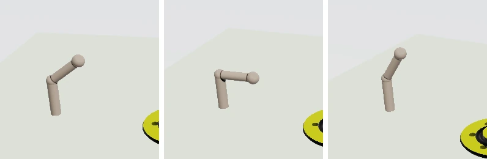

/ works / makina
Makina
形を組み合わせて立体を作るモデラーです。球や円柱を足したり削ったりして形を決めるところは、よくある 3D ソフトと変わりません。違うのは、 汚れや摩耗をあとから絵で描き足さないところです。角が擦れて光り、窪みに埃が溜まるのを、形そのものから計算しています。 形を変えると、汚れも同じフレームで付いて回ります。
どんな絵が出るか

3 枚とも実機のレンダリング結果です。ペットボトルとペンローズの三角形は Grasp3D の課題を移したもの。画面の配置は、ツリー・ビューポート・プロパティ・タイムラインという Grasp3D と同じ並びにしてあります。
どこから始まったか
授業で使った Java のツールを、直して、移した
大学の授業で Grasp3D という 3DCG モデラーを使いました。Java 製の教育用ツールで、球や円柱を組み合わせて形を作り、POV-Ray に渡して絵にします。 使っているうちに直したいところが出てきたので、まず原典のバグを直し、機能を足した版を作りました。
そのあと、同じものを C++ で書き直そうと考えました。Java 版は形をポリゴンに変換してから描きますが、距離場のまま GPU でレイマーチすれば、 ポリゴンにしない絵が出せます。丸い面は本当に丸いままで、削った断面もそのまま出ます。書き直しの過程で出てきたのが Makina です。
移植なので、正しく移せたかを確かめる必要がありました。そこで 同じ形を 3 通りの方法で表現して突き合わせています。 距離場（表面までの距離）、BSP による内外判定、POV-Ray に渡して出した画素。この 3 つは壊れ方が違うので、同じ間違いをしません。
- 距離場と Java 参照実装で、51,137 サンプルが一致
- 距離場と BSP の内外判定で、156,932 サンプルが一致
- 距離場と POV-Ray の絵で、シルエットの一致度が 0.9949 以上
シルエットを比べているのは、それが形・変換・カメラ・座標系の向きだけで決まるからです。1 つの数字で 4 つをまとめて検査できます。 座標系の向きを取り違えていれば、一致度はほぼ 0 になります。
汚れを形から出す
貼るのではなく、その場で計算する
ふつうのゲームや CG では、汚れも摩耗も画像として用意して立体に貼ります。貼るには展開図（UV）が要り、形を変えたら貼り直しになります。 Makina は距離場を持っているので、その場で計算できます。
- 擦れて光る縁。角の尖り具合と、外から見えているかどうかで決まる
- 溜まる汚れ。窪んでいて、光が届きにくいところ
- 流れ落ちる汚れ。上が開いていて、面が寝ていないところ
- 積もる埃。上を向いていて、擦れていないところ
溝の半径を動かすと、汚れの溜まる場所も一緒に動きます。溝がボルト穴と交われば、その交点に汚れが溜まります。 貼った画像では、こうはいきません。
エンジンと繋がっている

Makina で作った形は、そのまま自作のゲームエンジンへ渡せます。距離場は絵を出すためにも、ぶつかったかどうかを調べるためにも使えるので、 描画用と当たり判定用に別々のデータを持つ必要がありません。同じ 1 つの式から両方が出ます。
形を評価する部分（makina-core）は GPU もエンジンも知らない、ヘッダーだけのライブラリにしてあります。
そのため、ウィンドウもグラフィックスデバイスも用意せずにテストできます。